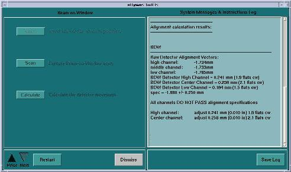

Illustration 2: Screen Shot for Beam on Window Alignment

Illustration 2: Screen Shot for Beam on Window Alignment
| NOTE: | For BrightSpeed Select systems with a Solarix tube, the specs for BOW are checked by the software. If an adjustment is needed for the first BOW scan, make adjustments per procedure. In the verification scan, the spec is different than the software version because the tube is warm. The specification is -1.99 ± 0.5mm. |
Illustration 3: BrightSpeed Select systems with a Solarix tube Screen Shot for BOW Alignment
